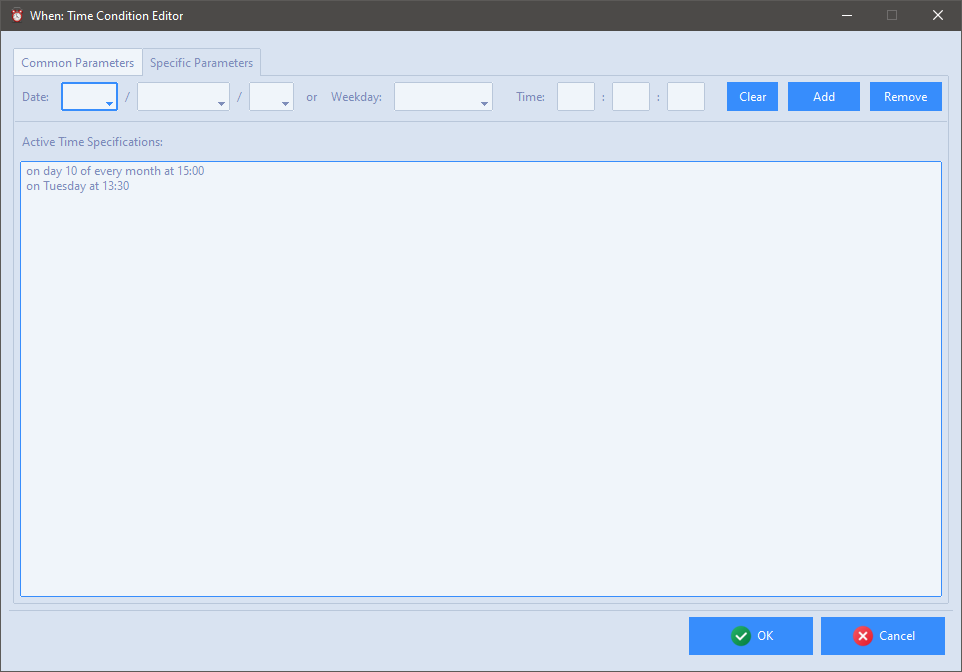

Time Related Conditions
The condition items described in this section depend on time checking, therefore the related tests will always be performed exactly at the scheduler tick: this means that such tests ar never performed at a random instant between two ticks.
Interval
Interval based conditions are possibly the simplest ones: verification depends on the passing of a certain amount of time since the start of the scheduler. In combination with the recurring flag (in the common section) leads to periodic conditions, that is, occurring every time the specified interval passes.

The only available parameter is the interval duration, that may be specified in seconds, minutes, or hours.
Time Specification
This type of condition overlaps with the common, system provided time based scheduler. One or more time specifications can be provided, at which the condition is verified. The time specification can be given indicating a (partial) instant, by filling part of the entries in the row above the time specification list. Omitting part of the entries has different effects depending on which ones are omitted. Generally, specifying the date entries and omitting the time related ones indicates that the condition occurs at midnight at the specified date. Omitting the year indicates that the condition occurs every specified month and day at midnight. Omitting year and month and specifying day N indicates that the condition occurs every day N of the month in all months (unless, of course, N is above 28 or 29, which excludes some months). Specifying a day of the week of course indicates the occurrence every that day of the week. Providing hours, minutes and seconds restricts occurrence to the specified time. If no date or weekday are specified, the condition occurs every day at the specified time, but in this case, when the hour is omitted, the occurrence happens every hour at the specified minute (and second if provided).

The list tries to display the provided specifications in human-readable form. In order to add a specification, once the necessary fields are filled, it is sufficient to click the Add button. To remove a specification it must be double clicked in the list, and then the Remove button must be clicked. The Clear button in the first row is useful to clear all the entries at its left (it does not modify the list contents). To remove all provided time specifications at once, the Clear All button is available in the lower part of the form.
Note that, if the condition is not recurrent, it will occur when just one of the provided time specifications is reached for the first time.
Idle Session
This condition occurs after a certain time has passed since there was any type of user interaction (mouse, keyboard, touch screen, etc.) with the current session.

The only available parameter is the duration of the idle session, that may be specified in seconds, minutes, or hours. In this case specifying the condition as recurring will cause it to occur again if the session exits its idle state first, and then returns idle for the same amount of time.
Warning
On some Wayland based Linux environments, idle time is calculated as the time after the session has been locked: this should not be the case of recent version of Wayland though.